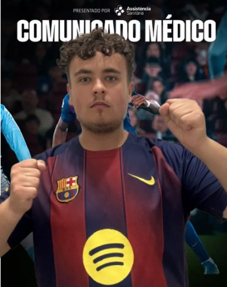

FlashStroma Wiadomości › Świat
ŚwiatKreweda ponownie kontuzjowany! ,,To nic poważnego, ale lepiej zachować ostrożność"

Przed meczowy trening, taki jak ostatnio, i tak jak ostatnio Kreweda z kontuzją...
Jak informuje sztab medyczny Jugosławianki Psiepauch Krewedkowski podczas ostatniego treningu poczuł dyskomfort w mięśniu piszczelowym prawej nogi, który ustąpił. Zawodnik zdecydował się zagrać w meczu, w którym na boisku spędził 90 minut. Po zejściu z boiska okazało się że niedawny uraz powrócił. Klub jednak uspokaja że było to lekkie przeciążenie i po odpowiednim skonsultowaniu zawodnik będzie dostępny do gry na najbliższym spotkaniu. Klub nie zapewnia jednak gwarancji że zawodnik zagra od pierwszej minuty, lub że zagra w ogóle.